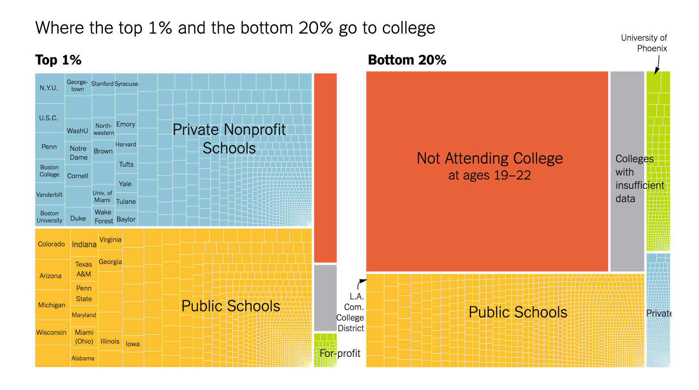
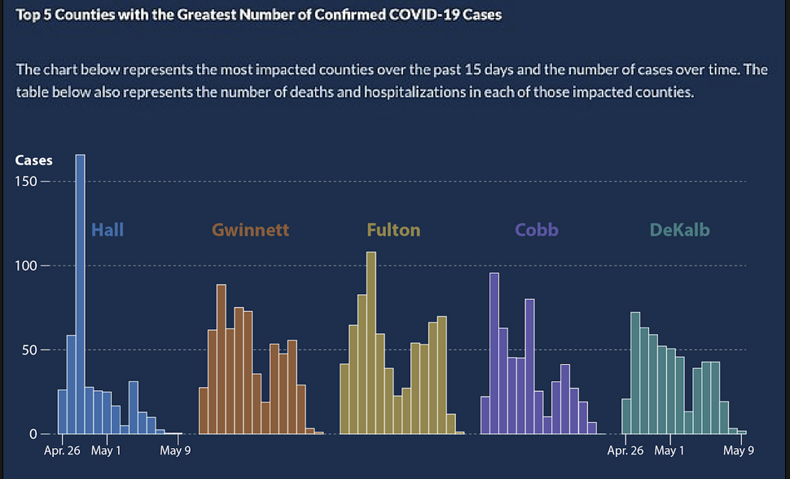

| ID | kind | .pred_AI | .pred_class | detector | native | name | model |
|---|---|---|---|---|---|---|---|
| 1 | Human | 0.9999942 | AI | Sapling | No | Real TOEFL | Human |
| 2 | Human | 0.8281448 | AI | Crossplag | No | Real TOEFL | Human |
| 3 | Human | 0.0002137 | Human | Crossplag | Yes | Real College Essays | Human |
| 4 | AI | 0.0000000 | Human | ZeroGPT | NA | Fake CS224N - GPT3 | GPT3 |
| 5 | AI | 0.0017841 | Human | OriginalityAI | NA | Fake CS224N - GPT3, PE | GPT4 |
| 6 | Human | 0.0001783 | Human | HFOpenAI | Yes | Real CS224N | Human |

Statistical Thinking
Megan Ayers
Math 141 | Spring 2026
Monday, Week 1
Getting Started in Math 141
Finding Resources

Math 141: The whole game
Learning Outcomes
In this course, you will learn how to think critically with data by engaging in the entire data analysis process.
Most of our time will be spent in the Exploration and Visualization, Data Wrangling, and Modeling and Inference steps, but we will spend some time in each cog!
- First ~3 weeks in Exploration and Visualization, Data Wrangling, and Data Acquisition
- Next ~3 weeks in Modeling
- Final ~half of the course in Inference
Data in Math 141
Will use a wide-range of real and relevant data examples


Example: Visualizing COVID Prevalence
- In May of 2020, the Georgia Department of Public Health posted the following graph:

Example: Visualizing COVID Prevalence
At a quick first glance, what story does the graph appear to be telling?
What is misleading about the graph? How could we fix this issue?
Example: Visualizing COVID Prevalence
- After public outcry, the Georgia Department of Public Health said they made a mistake and updated the graph:

Example: Visualizing COVID Prevalence
- After public outcry, the Georgia Department of Public Health said they made a mistake and updated the graph:
- How do your conclusions about COVID-19 cases in Georgia change when now interpreting this new graph?
Example: Visualizing COVID Prevalence
Alberto Cairo, a journalist and designer, created the second graph of the Georgia COVID-19 data:

A key principle of data visualization is to “help the viewer make meaningful comparisons”.
What comparisons are made easy by the lefthand graph? What about by the righthand graph?